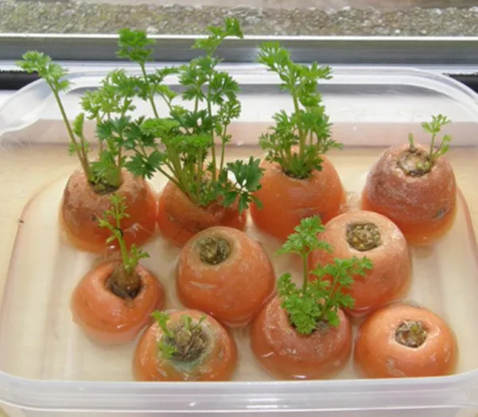

Aprende a sembrar Zanahoria

Sin Semilla
Para iniciar con el proceso de germinación, usaremos unas cuentas de nuestras zanahorias que tenemos en casa, aprovecharemos toda la raíz, y conservar la parte superior. Con paciencia, vamos a tratar de conseguir entre 4 o 5 partes superiores, dejando al menos 3 centímetros de la zona de raíz.
Realiza paso a paso, y podrás obtener en menos de 7 días los nuevos brotes, se comenzarán a desarrollar, sigue las siguientes instrucciones:
Parte de la zanahoria que se debe de conservar
- Una vez que cortaste la parte superior de la zanahoria, limpiala bien con agua.
- Prepara un molde de plástico con una capa de algodón húmedo.
- Depositar las partes superior de la zanahoria sobre el algodón humedecido.
- coloca en un lugar donde reciba luz y espera de 7 a 10 días.
- Cuando salgan los primeros brotes trasplanta en un recipiente con tierra.